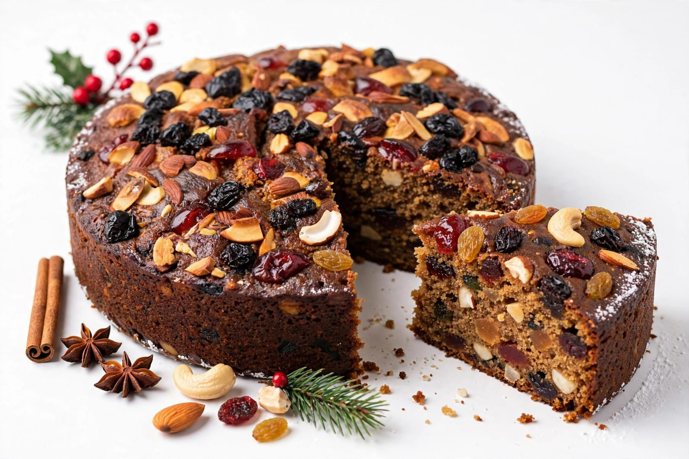
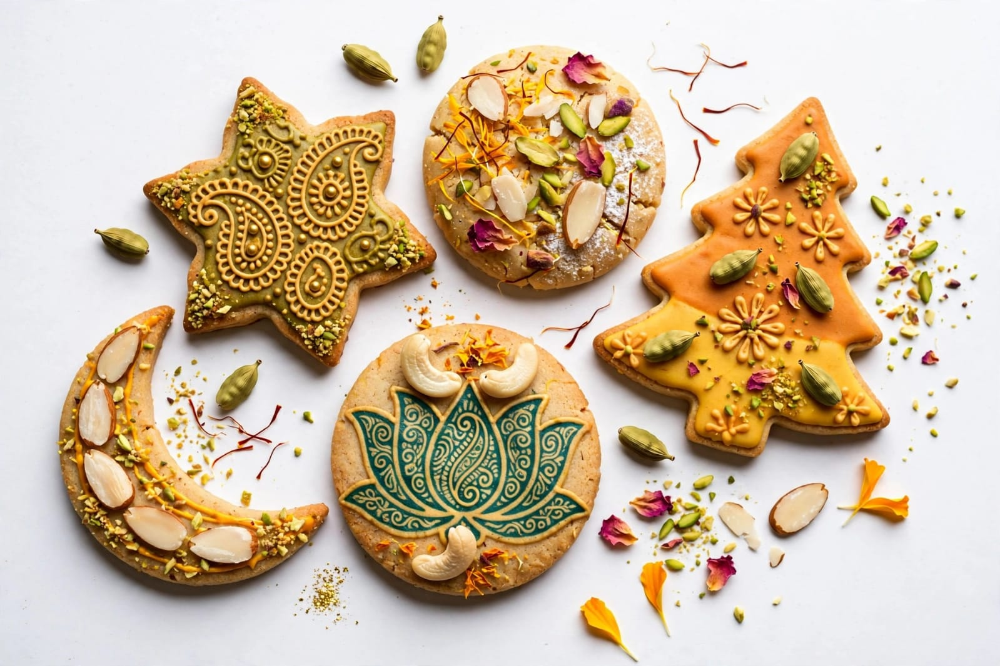
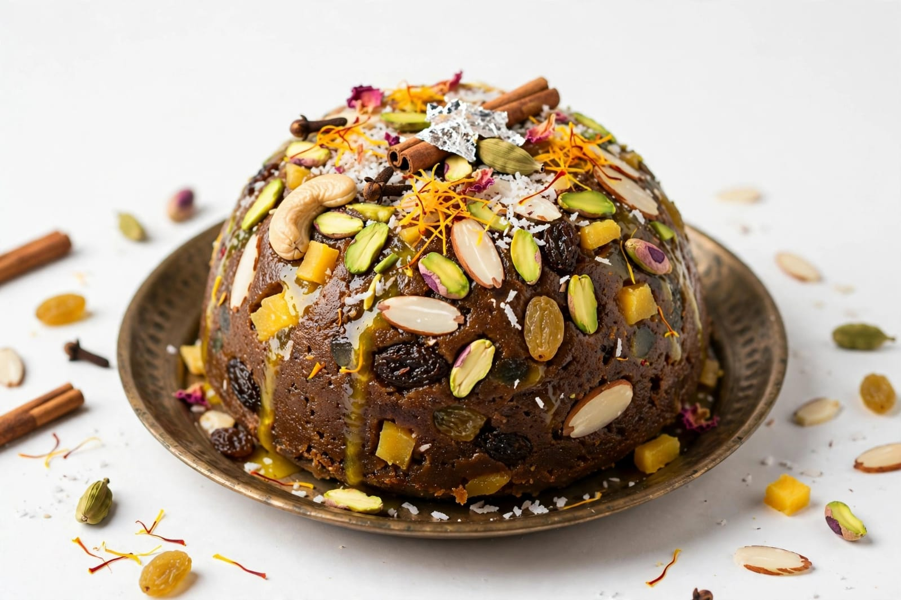

About Christmas
Christmas is one of the most widely celebrated festivals in the world. It is celebrated every year on 25 December. Christmas celebrates the birth of Jesus Christ. The festival is celebrated by Christians around the world. Christmas is also celebrated by many people as a cultural festival. It is a festival of joy, peace and love. People prepare their homes before Christmas. Homes are cleaned and decorated beautifully. Christmas trees are decorated with colourful ornaments. Lights are used to decorate homes and streets. Stars are an important decoration during Christmas. Christmas stars are commonly displayed outside homes. Churches are decorated for the festival. People attend special church services. Christmas carols are sung during the celebrations. Carols are traditional Christmas songs. Families come together to celebrate Christmas. People wear new and beautiful clothes. Friends and relatives visit each other. Christmas greetings are exchanged among people. People wish each other a Merry Christmas. Gifts are exchanged during Christmas. Giving gifts represents love and kindness. Children enjoy receiving Christmas gifts. Santa Claus is a popular Christmas figure. Santa Claus is traditionally associated with giving gifts. Children enjoy stories about Santa Claus. Christmas decorations create a festive atmosphere. Homes are decorated with lights and ornaments. Churches may display nativity scenes. A nativity scene represents the birth of Jesus. Christmas is a time for family gatherings. People prepare special meals for the festival. Cakes and sweets are popular Christmas foods. Christmas cakes are enjoyed by many families. People share food with friends and neighbours. Christmas encourages kindness and generosity. People may help those who are in need. The festival spreads happiness and peace. Christmas has great religious and cultural importance.
Christmas preparations often begin several weeks before the festival. People decorate Christmas trees in their homes. Christmas trees may be decorated with lights and ornaments. Stars are placed on houses and buildings. Colourful lights brighten streets and markets. Christmas markets are popular in many places. People buy gifts for family members and friends. Greeting cards are exchanged during Christmas. Churches hold special prayer services. Midnight Mass is an important tradition for many Christians. People gather in churches to pray together. Christmas carols are sung in churches and homes. Children may participate in Christmas programs. Schools may organize Christmas celebrations. People dress as Santa Claus during some events. Christmas plays are performed in some communities. Nativity plays may tell the story of Jesus's birth. Families spend time together during the holiday. People prepare traditional Christmas dishes. Fruit cake is a popular Christmas food. Plum cake is also enjoyed in many places. Cookies and biscuits are prepared for guests. Puddings are enjoyed in some Christmas traditions. Roast dishes may be prepared for festive meals. Different regions have different Christmas foods. In India, Christmas is celebrated in many states. Goa is known for its colourful Christmas celebrations. Kerala has many traditional Christmas customs. Churches in many Indian cities are beautifully decorated. People visit churches during Christmas. Christmas carols are heard in many communities. Christmas processions may be organized in some places. Families invite relatives and friends for meals. People share sweets and cakes with neighbours. Christmas promotes friendship among communities. It encourages people to spread kindness. The festival reminds people about peace and compassion. Christmas creates a joyful atmosphere. People celebrate the festival with faith and happiness. Christmas is an important festival in India and around the world.
Christmas has many traditions followed by different communities. Traditions may vary from country to country. Families have their own special ways of celebrating Christmas. Christmas trees are an important part of many celebrations. Decorations may include stars, bells and colourful lights. Nativity scenes are displayed in many churches. People gather for prayers and religious services. Christmas carols create a festive atmosphere. Families enjoy special meals together. Cakes and sweets are shared with guests. People give gifts to show love and appreciation. Helping others is an important Christmas value. Many people donate food or gifts to those in need. Christmas encourages generosity and kindness. The festival brings families closer together. It also brings communities together. People forget differences and celebrate peacefully. Christmas spreads a message of hope and happiness. It is a festival of love, peace and joy.
Special Foods

Christmas Cake
Christmas cake is a popular festive cake enjoyed during Christmas.

Cookies
Cookies are popular sweet snacks prepared during Christmas.

Pudding
Pudding is a sweet dessert enjoyed in many Christmas celebrations.